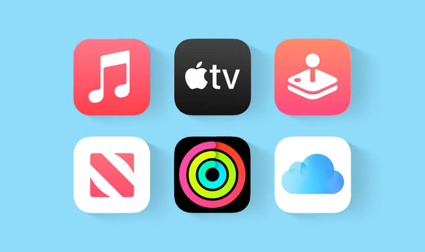

"Guzman joined to introduce project management practices in an agency lacking them. But he quickly stretched to also modernise how we worked and led strategic projects across functions. To this day there are improvements he introduced that are still impactful on how we work."
How I Work
3+1 examples.
Three finished plus one ongoing cases in different organisations,
all trying to do meaningful work in complexity.

Dentsu iProspect APAC
Change Without a Blueprint


Rainmaking / Engie Factory
Innovation from First Principles

Apple
Building in Complexity
Singular Solving · In Progress
A New School for Unconventional Learners
Change Without a Blueprint
The Challenge
A 400-person APAC agency in Singapore, part of a 1,500-person regional team. Nine function heads each owned their own strategy, alongside a separate regional leadership team. High churn, margins under pressure, scope creep, and multiple failed change initiatives — against KPIs spanning commercial, delivery, talent, and culture. They asked me to bring in project-management expertise, unblock initiatives, and upskill teams. But it was clear that to do that, I needed to solve other things first.
The DiagnosisThe voiced problem was process and consistency. But my behavioural and systemic read found the organisation rewarded only revenue gain and self-confidence, pushing every function toward conflicting KPIs — allowing quiet, culture-positive overachievers to go unnoticed, while loud, culture-negative underachievers hid in the system. Profitability was an afterthought as long as revenue targets were hit, which created problems everywhere downstream.
The ApproachWith no formal authority, I took a dual approach. One workstream ran a company-wide diagnosis — mapping every department's workflows, pain points, tech, and potential for human and machine automation (separating high- from low-value work) to assess conditions fairly, build initial playbooks per function as a base to improve from, and set improvement goals.
The other workstream had me volunteering on the teams' hardest challenges as a cross-function project manager, sharing the pain. That earned trust fast and showed me the organisation as it behaved, not as people described it in interviews.
It led to more work, and soon I was coordinating a strategic cross-function portfolio for the C-suite and head of strategy, and a culture transformation programme: new technology, learning and development, vendor partnerships, new-client pitches, large-account onboarding, culture initiatives, and new products and services.
We couldn't fix everything at once, so we resourced the top priorities and then focused on the single simplest intervention that could snowball the biggest behavioural change. We co-designed a new operating system — DDO (Define, Design, Onboard) — spanning client pitch to onboarding, built with input from every team, anchored on one idea: setting our teams up for success by becoming the best agency in APAC at scoping work. Better scoping meant better pricing, controlled profitability, and productised engagements instead of starting from scratch each time. Tested with one team, scaled to nine, with feedback loops and champions so it ran without me.
Lasting OutcomesNot attributable to me alone, but to combined effort across departments: churn down 50% in six months · pitch success up 33% on fewer pitches · unprofitable clients from 28% to 0 · ~1 day/week saved per employee. DDO is still partly in use, and several function heads took it with them to their next organisations.
How I Would Do It Today With AI
I could do two-thirds of the diagnosis in weeks instead of months — and add a fourth source alongside behavioural observation: reading behaviour directly from the data the organisation produces.
Instead of a documented playbook, DDO would become a live tool — an AI-powered platform that guides projects, keeps a documented and scannable history, helps with training, and is easier to improve while potentially designed for catching issues while there's still time to fix them.
It wouldn't handle the trust-building, the shared accountability, or the care and positive influence — but it would give me far more time to spend there.
Innovation from First Principles
The Challenge
Build an open innovation lab and a new program for Engie Factory in APAC (a global energy multinational). New sector, no pre-existing methodology, an unprecedented project — six months, team of four. We had to work with Engie executives, the Engie Factory team, the seven VPs who each owned the strategy and P&L of a vertical, their teams, and startups around the globe. The goal: identify new opportunities, design tech pilots, and test them as business cases aligned with the 2030 SDG goals. I had no hierarchy to lean on — I had to lead by influence, because good ideas and methodology alone wouldn't move anyone.
The DiagnosisThe strategic logic of the lab wasn't built around the VPs' incentives, and no pilot would survive until that changed. They were measured on commercial and budget-driven KPIs that included no innovation at all. Only a couple of VPs were naturally inclined toward it; most tried to avoid it as a distraction from their real targets — hoping the initiative would disappear if it failed fast enough.
The ApproachI designed and ran the program with the Rainmaking team around the VPs' actual incentives, partnering with Engie Factory's leadership as primary client. We started by making an example of the VPs most willing to collaborate — but when the others' engagement stalled, I took the elevator to the top floor and ambushed Engie's CEO: first to convince him I actually worked there, then to propose that each VP tie a minimum 3% of next year's revenue to a product or service line that hadn't existed the year before. From that point the lab was a strategic partner to the VPs, not a nice-to-have.
We then productised a custom methodology built around how the VPs and startups actually worked, split into two phases: Pilot ID (2 months) and Co-Pilot (4 months) — building the business models and the agreements between startups and the corporate. We adapted it to remote delivery mid-COVID. I gave each team member the lead on the area they most wanted to grow in — public speaking, business modelling, Design Sprint facilitation — while I stayed accountable for the whole.
Lasting OutcomesA commercial engagement with skin in the game: we profited only if we succeeded.
1,000+ startups screened · 5 concurrent pilots · SGD 4M in future revenue approved by the client's CEO · 33% pilot success rate.
Our custom Pilot ID and Co-Pilot approaches were adopted by Rainmaking for other clients and geographies.
How I Would Do It Today With AI
Sourcing. Screening 1,000+ partly with AI would scan and shortlist against each vertical's strategy and the SDG goals in days. Same as we could run market and future foresight research in a fraction of the time while improving our decision making.
Modelling. AI would generate first-pass business cases and the startup–corporate agreements for specific market or vertical terms, scenarios, and regulations fast, so the team could spend its hours refining, judging, and negotiating rather than building them — letting us run 10 pilots where we could only run 5, or running longer testing, potentially lifting the hit rate past 50%.
Repeatability. The whole thing could be productised as a platform — human-and-AI-in-the-loop workflows we'd reuse cycle after cycle for each pilot or client. Our custom methodology would have been built to scale from day one.
It wouldn't get me into the CEO's office or tie the VPs' incentives to the lab, or train and upskill my team, or define the best use of time for the VPs' team of experts committing one day a week, or unblock problems. It would just free time for exactly that.
The human part. It wouldn't get me into the CEO's office or tie the VPs' incentives to the lab or trained and upskill my team. It would just free far more of my time for exactly that.
Building in Complexity
The Challenge
Help build and scale a global program from almost nothing, mid-pandemic — from 20 people in 10 countries to 350 across 40, serving 12 products and 4 business lines, in under three years, while budgets grew 10× (USD 4M → 40M per quarter). Remote, across very different cultures, to Apple's standards — with the complexity itself increasing as we grew: more products, more markets, more regulation, more demanding KPIs each quarter. We were building the ship while sailing it: either we proved we could absorb more scale and complexity while sustaining at least 85% of our growing quarterly KPIs, or we risked losing the budget.
The DiagnosisThere was no stable "before" to fix — the ground moved every quarter. So the goal couldn't be the perfect system; one designed for this quarter's complexity would be obsolete by the next. The real need was different: keep everyone working from as much shared context as possible, so 40 people one quarter could act as coherently as 90 the next — without waiting on a few overloaded people who became bottlenecks, and without a head office trying to control every step across every time zone. Coherence, not control: I couldn't see any other way to scale.
The ApproachSo I designed for coherence over perfection. In practice it came down to five things — which I didn't conjure so much as discover: they presented themselves as the only viable way to both hit the goals and operate with integrity, sometimes later than I'd have liked. In order:
- ·Hire smart people with high integrity, committed to the challenge — not the job description.
- ·Continuously create shared context and quality expectations.
- ·Design how decisions and work flow.
- ·Align incentives with our KPIs and how we wanted to hit them — so the system rewarded the behaviours we actually needed.
- ·Then get out of the way — or elevate. Stay available to lift others and improve things, rather than wasting their time with noise or politics.
As one of the leadership team, my role was building and holding those conditions — governance, playbooks, training architecture, the full employee lifecycle, service levels, AI workflows — designed with the heads of all 9 departments, against KPIs that shifted every quarter, and optimised for async work across 40 countries.
Lasting OutcomesIt never broke. Through 10× growth in three years it held — even though the system was never finished. We kept proving we could take on more scale and complexity, and we kept the program.
20→350 people · 400+ onboarded · 100+ offboarded · 40 countries · budget 10× (USD 4M → 40M per quarter) · 85–110% KPI sustained quarterly.
How I Would Take It Further With AI
We had custom AI automation back then, but it ran steps. Today it would carry the coherence itself: not just processing data and workflows, but recommending solutions and improvements live based on definable best standards and quality. After all it is a digital performance program, which is highly documented.
The hardest part was keeping 40 countries working from the same picture as things grew in complexity, new projects arrived, changes in regulation or criteria, etc. An AI layer over our playbooks, documentation, and sources would let anyone get a situated answer instantly, plus also understand what we are missing (info, workflows, or touchpoints) — anticipating issues and how to resolve them.
The human complexity across cultures, the critical thinking, the on-the-go judgment stay human. But AI would bring more transparency to people's workloads — so we could design for fairness before the work overwhelmed anyone.
A New School for Unconventional Learners
The Challenge
Design and launch an education program for the learners conventional university fails: neurodivergent, gifted, and unconventional minds — often the ones who can solve the hardest problems but get flattened to fit a model, or judged unfit for it (broadly 2–10% of people). The aim isn't to transfer knowledge. It's to build operators who can act under real complexity and uncertainty, with AI in the loop. I was given a blank canvas, a deadline, and freedom to choose who I worked with.
The DiagnosisMost education starts from the curriculum and works outward to the student — which is exactly why it fails these learners. Most "innovation" repeats the mistake: new curricula dropped inside 20th-century structures, where the container eats the content. So we started from a question we could actually be wrong about: how do you develop generalists with the critical thinking to navigate systems, the courage to pursue futures worth following, and no interest in collecting credentials?
The Approach
We listened before designing — students, parents, teachers, school leaders, and the employers who'll hire this generation. Then we made concrete choices and stuck to the problem, not our first ideas:
- ·We started aiming only at neurodivergent and gifted profiles — then widened the reach.
- ·We kept an existing regulated curriculum, but changed how it's taught, using every bit of flexibility we could find.
- ·We killed the original two-speed plan (in-person plus a lagging digital build) because it split our focus — and committed to getting one in-person cohort right first.
I do this part-time, alongside Singular Solving's leadership — a complex-problem-solving consultancy turned foundation I've worked with before, with a proven history of care for neurodivergence.
Where It Stands NowIt's outgrowing its original scope. What began as an alternative to the first year of university is becoming a full school: a chance came up to acquire an entire school in Madrid, letting us build the long-term vision from the ground up. We're in talks now.